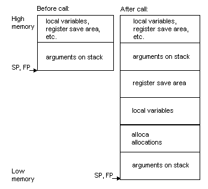

Reference
The Reference section
describes the ABI and AM33-specific attributes of the main GNUPro tools.
-
Compiler
-
ABI Summary
-
Assembler
-
Linker
-
Debugger
-
Simulator
Compiler
This section describes AM3x-specific
features of the GNUPro Compiler. In order to generate AM33-specific code,
the '
-mam33'
option must be included in the command line.
AM3x-specific command-line
options
For a list of available generic
compiler options, refer to "GNU CC Command Options" in Using GNU CC in
GNUPro
Compiler Tools. In addition, the following AM3x-specific command-line
options are supported
:Generate code to work around bugs in the MN10300 multiply instruction.
This is the default.
-mno-mult-bug
Do not generate code to work around bugs in the MN10300 multiply
instruction.
Enables AM33 features. Must be used to generate AM33-specific
code.
Disables AM33 features. '-mno-am33'
is the default.
Preprocessor symbols
By default, the compiler defines
the preprocessor symbols '
__MN10300__'
and
'__mn10300__'.
If the '
-mam33'
compiler option is used, '
__AM33__'
is defined.
AM3x-specific Attributes
There are no AM3x-specific
attributes. See "Declaring Attributes of Functions" and "Specifying Attributes
of Variables" in "Extensions to the C Language Family" in Using GNU CC
in
GNUPro Compiler Tools for more information.
New compiler and linker features
The GNUPro compiler and linker
have been improved by Cygnus to provide even more benefits for customers
developing for embedded targets. These features are guaranteed order of
initialization at startup, and selective linking.
Initialization prioritization
In C++, you can define static
and global objects with constructors, or initialize static and global variables
from a function. This means that the constructors or functions are run
before the rest of your program starts. However, when you have these objects
spread over multiple files, the C++ standard does not specify the order
in which they are initialized, and for all practical purposes the order
is random. For an embedded system, this can be a problem, as you may want
to ensure that a static scheduler object is initialized before static threads
can attach to it, or that devices are initialized before they are used.
GNUPro solves this problem by allowing you to define a priority when the
static or global is declared. The following example shows the syntax:
static
object_t myobj __attribute__((init_priority (30000) ));
The syntax is slightly different
if the object takes any arguments to its constructor:
static
object_t myobj __attribute__((init_priority (30000) )) = \ object_t(arg1,
arg2);
The numeric priority can be
from 1 to 65535, with 1 being the highest priority, and 65535 being the
lowest. The default priority for objects without this attribute is 65535.
Constructors with a higher priority are guaranteed execution before constructors
with lower priority.
In all cases, you must provide
the argument '
-finit-priority'
to the compiler on its command-line for it to recognize this attribute
when you are compiling your C++ source files.
If you are using eCos, be
warned that eCos uses initialization priorities internally. Ensure you
choose an appropriate priority level so that other eCos subsystems will
have initialized before you refer to them in your own constructor.
Selective linking
When writing C and C++ code,
it is sometimes natural to include more than one function in a source file.
For example in C++, it is common to have all methods for a particular class
contained in the same C++ source file. However, there is a drawback that,
conventionally, if you use just one of these functions, then all the functions
defined in that file also get included in the final executable image. For
an embedded system, this can substantially and unnecessarily increase the
size of the final image stored in ROM, or loaded into RAM when debugging.
The GNUPro C and C++ compilers
can now optionally remove these unnecessary functions from the final image.
They also ensure that any shared global data is removed that is only referenced
by functions that are removed. This can be done by including the options
'
-ffunction-sections'
and '
-fdata-sections'
on the command-line, when you invoke the C or C++ compiler. The '
-ffunction-sections'
option removes unnecessary functions, and the '
-fdata-sections'
option removes unnecessary data.
In addition, when classes
define virtual methods in C++, it is possible to remove any unused methods
from the final image by passing the option '
-fvtable-gc'
to the C++ compiler on its command-line.
In all cases, you must also
supply a command-line option when linking. If invoking the linker ld directly,
use '
--gc-sections'
on its command-line; alternatively, if you are using the preferred method
of linking your executable, using the form
'
gcc -o <program
name> <file1>.o <file2>.o', then also pass the
option '
-Wl,--gc-sections'
on the compiler command-line, for example:
gcc
-o prog f1.o f2.o -Wl,--gc-sections
ABI
Summary
This section describes the
AM3x Application Binary Interface.
Data type sizes
and alignments
The following table shows
the size and alignment for all data types:
Alignment rules
The stack is aligned to a
four-byte boundary.
Structures and unions have
the same alignment as their most strictly aligned component.
Register allocation
When generating code for the
AM33, the compiler allocates registers in the following order:
'd0',
'
d1', '
a0',
'
a1', '
d2',
'
d3', '
a2',
'
e0', '
e1',
'
e2', '
e3',
'
e4', '
e5',
'
e6', '
e7',
'
a3'
When generating code for the
MN10300/AM31, the compiler allocates registers in the following order:
'd0',
'
d1', '
a0',
'
a1', '
d2',
'
d3', '
a2',
'
a3'
Register usage
This table describes register
usage.
|
|
|
|
|
|
' d0',
' d1', ' a0',
' a1', ' e2',
' e3', ' e4',
' e5' |
|
|
|
' d2',
' d3', ' a2',
' a3', ' e0',
' e1', ' e6',
' e7' |
|
|
|
' sp',
' ccr', ' mdr',
' lar', ' lir', |
|
|
|
|
3
|
Switches
There are no switches that
effect the ABI or calling conventions. There are two switches that control
a particular aspect of code generation. See
AM3x-specific
command-line options
The
Stack Frame
This section describes AM3x
stack frame:
-
The stack grows downwards from high addresses
to low addresses.
-
A leaf function need not allocate a stack frame
if it does not need one.
-
A frame pointer need not be allocated.
-
The stack pointer shall always be aligned to
4-byte boundaries.
Stack frames for functions
that take a fixed number of arguments look like this:

Stack frames for functions that take a variable
number of arguments look like this:
Argument passing
'
d0'
and '
d1' are
used for passing the first two argument words, any additional argument
words are passed on the stack.
Any argument, more than 8
bytes in size, is passed by invisible reference. The callee is responsible
for copying the argument if the callee modifies the argument.
Function Return Values
'
a0'
is used to return pointer values.
'd0' and
'd1' are used
for returning other scalars and structures less than or equal to 8 bytes
in length.
If a function returns a structure
that is greater than 8 bytes in length, then the caller is responsible
for passing in a pointer to the callee which specifies a location for the
callee to store the return value. This pointer is passed as the first argument
word before any of the function's declared parameters.
Assembler
This
section describes AM3x-specific features of the GNUPro Assembler.
AM3x-specific command-line options
For a list of available generic
assembler options, refer to "Command-Line Options" in
Using AS in
GNUPro
Utilities . There are no AM33-specific assembler command-line options.
Assembler directives
There is a new assembler directive,
'
.am33', which
forces the assembler into AM33 mode. The compiler will automatically force
the assembler into AM33 mode when necessary, but the new directive may
be useful to assembly language programmers.
Syntax
The AM3x syntax is based on
the syntax in Matsushita's
MN10300 Architecture Manual.
The assembler does not support
synthesized instructions (pseudo instructions, which correspond to two
or more actual machine instructions).
Special characters
The AM3x assembler supports
'
;' (semi-colon)
and '
#' (pound).
Both characters are line comment characters when used in column zero. The
semi-colon may also be used to start a comment anywhere within a line.
These are the register names
supported for the AM3x: '
d0',
'
d1', '
d2',
'
d3', '
a0',
'
a1', '
a2',
'
a3', '
e0',
'
e1', '
e2',
'
e3', '
e4',
'
e5', '
e6',
'
e7', '
sp',
'
mdr', '
ccr',
'
lir', '
lar',
and '
x0' through
'
x15'.
Addressing modes
The following describes AM3x
assembler addressing modes:
Register indirect
with displacement
|
|
|
|
|
|
|
|
|
|
|
|
|
|
|
|
|
|
|
|
|
|
|
|
|
|
|
|
|
|
|
|
|
|
|
|
|
|
|
|
|
|
|
|
|
|
Register indirect
with index
|
|
|
|
|
The subscripts 'm',
'n', and 'i'
indicate source, destination and index respectively. The values of 'm',
'n' and 'i'
are from 0 to 3.
For detailed information, see
the MN10300 Series Instruction Manual.
Floating point
Although the AM3x has no hardware
floating point, the '
.float'
and '
.double'
directives generate IEEE-format floating-point values for compatibility
with other development tools.
Opcodes
For detailed information on
the MN10300 machine instruction set, see
MN10300 Series Instruction
Manual . The GNU Assembler (GAS) implements all the standard MN10300
opcodes.
Synthetic Instructions
The assembler supports "user
defined instructions."
The assembler does not support
synthesized instructions (pseudo instructions, which correspond to two
or more actual machine instructions).
AM3x-specific Assembler Error Messages
Error:
Unrecognized opcode
This instruction is misspelled or there is a syntax error somewhere.
Warning:
operand out of range
An immediate value was specified that is too large for the
instruction
Linker
eCos generates linker scripts
appropriate for the exact eCos configuration you have chosen. Instructions
on how to use this linker script are provided in the manual
Getting
Started with eCos.
AM3x-specific command-line options
For a list of available generic
linker options, refer to "Linker scripts" in
Using LD in
GNUPro
Utilities. There are no AM33-specific command-line linker options.
Debugger
GDB's built-in software simulation
of the AM3x processors allow the debugging of programs compiled for the
AM3x without requiring any access to actual hardware. To address the simulator
in GDB, type ‘target sim’. Then load the code into the simulator by typing
‘load’ and debug it in the normal fashion.
The default simulation provided is instruction-set level simulation
only. For execution of eCos programs built for the MN10300 (AM31) processor,
it is required that you pass additional arguments to the ‘target sim’ command.
Please consult the eCos Getting Started manual for the precise options
required.
It is not possible to simulate eCos programs built for the AM33 processor
as the devices necessary to run eCos are not simulated.
AM3x-specific command-line options
For the available generic
debugger options, refer to
Debugging with GDB in
GNUPro Debugging
Tools. There are no AM33-specific debugger command-line options.
Debugging programs with multiple threads
Programs with multiple threads
can be debugged using either the graphic user interface to GDB, GDBTk or
the GDB command line interface. The following describes how to debug multiple
threads using the GDB command line.
In some operating systems,
such as eCos, a single program may have more than one thread of execution.
The precise semantics of threads differ from one operating system to another,
but in general the threads of a single program are akin to multiple processes,
except that they share one address space (that is, they can all examine
and modify the same variables). On the other hand, each thread has its
own registers and execution stack, and perhaps private memory.
GDB provides the following
functions for debugging multi-thread programs
-
'thread
threadno', a command to switch among threads
-
'info
threads', a command to inquire about existing threads
-
'thread
apply [threadno][all] args', a command to apply a command
to a list of threads
-
thread-specific breakpoints
The GDB thread-debugging facility
allows you to observe all threads while your program runs, but whenever
GDB takes control, one thread in particular is always the focus of debugging.
This thread is called the current thread. Debugging commands show program
information from the perspective of the current thread.
For debugging purposes, GDB
associates its own thread number, always a single integer, with each thread
in your program.
Display a summary of all threads currently in your program.
GDB displays for each thread (in the following order):
-
The thread number assigned by GDB
-
The target system's thread I.D.
-
The current stack frame summary for that thread
An asterisk '
*'
to the left of the GDB thread number indicates the current thread. Use
the following example for clarity.
|
|
|
|
at
/eCos/packages/kernel/v1_1/tests/thread_gdb.c:91
|
Name:
controller, State: running, Priority: 0, More: <none>
|
1
thread 1 Cyg_HardwareThread::thread_entry (thread=0x1111aaa2)
|
at
/eCos/packages/kernel/v1_1/src/common/thread.cxx:68
|
Name:
Idle Thread, State: running, Priority: 31, More: <none>
|
thread
<threadno>
Make thread number '<threadno>'
the current thread. The command argument, '<threadno>',
is the internal GDB thread number, as shown in the first field of the 'info
threads' display. GDB responds by displaying the system identifier
of the thread you selected, and its current stack frame summary, as in
the following output.
|
|
|
|
#0
change_state (id=0, newstate=0 '\000')
|
at
/eCos/kernel/current/tests/bin_sem2.cxx:93
|
93
if (PHILO_LOOPS == state_changes++)
|
Current
language: auto; currently c++
|
thread
apply [<threadno>][<all>]
<args>
The thread apply command allows you to apply a command to one
or more threads. Specify the numbers of the threads that you want affected
with the command argument '<threadno>',
where '<threadno>'
is the internal GDB thread number, as shown in the first field of the 'info
threads' display.
To apply a command to all threads, use 'thread
apply all args'.
Whenever GDB stops your program,
due to a breakpoint or a signal, it automatically selects the thread where
that breakpoint or signal happened.
When your program has multiple
threads, you can choose whether to set breakpoints on all threads, or on
a particular thread.
break
<linespec>thread
<threadno>
If '
<linespec>'
specifies source lines, then there are several ways of writing them.
Use the qualifier 'thread
<threadno>'
with a breakpoint command to specify that you only want GDB to stop the
program when a particular thread reaches this breakpoint. '<threadno>'
is one of the numeric thread identifiers assigned by GDB, shown in the
first column of the 'info
threads' display.
If you do not specify '
thread
<threadno>'
when you set a breakpoint, the breakpoint applies to all threads of your
program.
You can use the thread qualifier
on conditional breakpoints as well; in this case, place '
thread
<threadno>'
before the breakpoint condition, as the following example shows.
(gdb)
break frik.c:13 thread 28 if bartab > lim
|
Whenever your program stops
under GDB for any reason, all threads of execution stop; not just the current
thread. This allows you to examine the overall state of the program, including
switching between threads, without worrying that things may change.
Conversely, whenever you restart
the program, all threads start executing. This is true even when single
stepping with commands like 'step'
or 'next'.
In particular, GDB cannot single-step all threads in lockstep. Since thread
scheduling is up to your debugging target's operating system (not controlled
by GDB), other threads may execute more than one statement while the current
thread completes a single step. In general other threads stop in the middle
of a statement, rather than at a clean statement boundary, when the program
stops.
You might even find your program
stopped in another thread after continuing or even single stepping. This
happens whenever some other thread runs into a breakpoint, a signal, or
an exception before the first thread completes whatever you requested.
SET SCHEDULER-LOCKING
For targets that support it,
GDB has a new command that helps to debug multi-threaded programs.
The '
set scheduler-locking
[on off step]' command allows the GDB user to exert some
control over how threads are scheduled while debugging.
Normally GDB does not attempt
to interfere with thread scheduling.
This means that in the default mode ('
scheduler-locking
off'), the current thread may be scheduled out, and a different
thread may begin running, at any time (as determined by the native scheduler).
For instance, you may give a GDB command such as '
step'
or '
finish',
and when the command completes, you may be looking at a different thread.
If you set the scheduler-locking
mode to '
step',
then GDB will try to interfere with the native scheduler just enough to
prevent another thread from popping up while you debug. Other threads may
get to run sometimes, but whenever a command such as '
step'
or '
finish'
completes, you should be looking at the same thread that was running before
the command. Of course, if another thread gets to run and hits a breakpoint,
GDB will still switch you to that thread (so if you don't want that to
happen, then disable your breakpoints).
For even greater (and more
intrusive) control over the thread scheduler, GDB provides the mode
'
scheduler-locking on'.
In this mode, the native scheduler is completely locked, and no thread
may run except the current one. Obviously this will radically change the
behavior of your program, and may lead to deadlock or other unpleasant
consequences, so use it with caution.
Syntax:
set
scheduler-locking [off on step]
Set mode for locking scheduler during
target execution.
No locking (threads may preempt
at any time).
Full locking (no thread except the
current thread may run).
The scheduler is locked during every
single-step operation. In this mode, no other thread may run during a step
command. However, other threads may run while stepping over a function
call ('next').
Simulator
The GNUPro simulator does not support the execution of
eCos executables built for the AM33. For the AM33 the simulator can only
provide instruction-set simulation, and does not simulate the AM33 devices
necessary to support eCos.
The remainder of this chapter is devoted to the simulation of eCos executables
built for the AM31 (MN10300) part.
MN10300/AM31 simulation
The GNUPro simulator allows execution of a program compiled for the
MN10300/AM31 target CPU on any supported host computer. It includes a simulator
module for the target CPU instruction set, memory, and may also include
simulated peripheral devices such as serial I/O and timers. Altogether,
these features allow developers to test their MN10300 programs, without
need for an actual board with that CPU.
The MN10300 simulator is not designed to match timing characteristics
of its target board. For example, the CPU module uses a single clock cycle
for all instructions, its memory is infinitely fast, and its simulated
serial I/O is infinitely fast. Furthermore, a number of obscure or inapplicable
functions were omitted from the simulated peripherals. The simulator is
just complex and accurate enough to run eCos programs.
Features
The GNUPro simulator supports the following registers:
Volatile registers: d0,
d1, a0,
a1
Saved registers: d2,
d3, a2,
a3
Special purpose registers: sp,
pc, ccr,
mdr, lar,
lir
Memory is 4mb starting at location '0x48000000'.
The stack starts at the highest memory address and works downward. The
heap starts at the lowest address after the text, data and bss.
MN10300/AM31-specific command-line options
The following general options, are supported by the simulator:
--board=BOARD
Specifies that the simulator be tailored to a model of a specified
hardware board. For the mn10300, the '--board=stdeval1'
option will add support for several peripherals on the evaluation board,
including the mn103002 on-board interrupt controller, timers, and serial
I/O modules. The board's actual RAM & ROM memory layouts are matched
by the simulator.
--profile [on|off]
This option creates a file called 'gmon.out'
that contains profiling information. This file can be used as input to
'gprof', the
GNU profiler.
--sockser-addr=HOSTNAME:PORT
Specifies that the simulation of the primary serial I/O peripherals
should send data to and from a TCP/IP socket rather than to and from the
simulator console. The TCP/IP socket's listening address is specified by
the argument. HOSTNAME should refer to an IP address of the host, and PORT
should be an unused port number between 1024 and 65535. You may use any
terminal program that connects to TCP/IP sockets, such as telnet, kermit,
or socket, to interact directly with the simulated program.
You can also use gdb’s ‘target remote HOSTNAME:PORT’ command to connect,
if the simulator is running a program equipped with a gdb stub.
--trace=[on|off]
This creates a file called 'trace.din'
that contains tracing information. Use the '--tracefile'
switch (discussed below) to change the name of the output file.
C:\> mn10300-elf-run
--trace hello
Hello, world!
3 + 4 = 7
Here are the first 10 lines of the file produced by the above run:
2 a0040004
; width 4 ; load instruction
2 a0040008 ; width
4 ; load instruction
2 a004000c ; width
4 ; load instruction
2 a0040010 ; width
4 ; load instruction
2 a0040014 ; width
4 ; load instruction
2 a0040018 ; width
4 ; load instruction
2 a004001c ; width
4 ; load instruction
2 a0040020 ; width
4 ; load instruction
2 a0040024 ; width
4 ; load instruction
2 a0040028 ; width
4 ; load instruction
--tracefile <file>
This changes the name of the file to which trace information
will be written.
C:\> mn10300-elf-run
--trace --tracefile=trace.out hello
Placing trace information
into file "trace.out"
Hello, world!
3 + 4 = 7
Using the simulator
An eCos program is normally built with a particular “download method” in
mind, that is, the means by which the program is to be ultimately loaded
into the target hardware. With some special considerations, the simulator
is able to run programs built for any of these methods. Use the configuration
options in eCos’s Hardware Abstraction Layer (HAL) package to support the
different download methods. The following table summarizes the ways in
which an eCos image can be prepared for different types of download.
HAL configuration, for various download methods
|
Download method
|
HAL configuration
|
|
Burn hardware ROM
|
ROM startup
|
|
Download to ROM emulator
|
ROM startup
|
|
Download to board with CygMon
|
RAM startup
|
|
Download to simulator without CygMon
|
ROM startup
|
|
Download to simulator with CygMon
|
RAM startup
|
|
Download to simulator ignoring devices
|
SIM configuration
|
CAUTION:
An application configured for RAM startup cannot be run directly
on the simulator: it will fail during startup. You can only download it
to the simulator if you are already running CygMon in the simulator, as
described below.
The simulator-specific configuration does not include device drivers
or watchdog devices that the simulator would otherwise have to emulate.
In most circumstances, you should not download to simulator ignoring devices.
If you use this download method, the binaries built with this configuration
will not run on the target board; they can only run on the simulator. Likewise,
binaries built to run on the target board will not run on the simulator.
In some cases, you may want to use a simulator specific configuration
to try to work around problems with the device drivers or with the simulator
itself.
Simulator clocks and timers sometimes appear to be running very slowly,
even when there are apparently no active threads. Delays that should only
be in seconds can run to minutes. These delays occur because the eCos kernel
idle thread is running intensively, and the simulator emulates it faithfully.
With the SIM configuration, however, the eCos kernel realizes it is in
a simulated environment, and can therefore adjust the clock settings to
be more realistic.
Simulator exceptions within GDB
If you invoke the simulator within GDB, using the '
target
sim' command, you may encounter some ambiguities when processing
signals and exceptions. When an exception is raised in the simulator, GDB
does not known whether the simulated program is intended to handle the
exception, or if GDB is intended to handle it.
For example, suppose you are debugging a ROM monitor in the simulator
invoked from GDB (we'll call this GDB1), and you have downloaded an application
to it from a second GDB session (which we will call GDB2). The second GDB
session, GDB2, would simply consider the simulated target as a remote target
and nothing more. Now suppose that in GDB2 you set a breakpoint in the
program. The breakpoint will be physically set in GDB1. So when the breakpoint
is reached, instead of the breakpoint being handled by the ROM monitor
as if it was a real target, the breakpoint will be interpreted by GDB1
as if you had asked GDB1 to set a breakpoint in the ROM monitor code. This
may not be your desired intention. To solve this, you can tell GDB1 not
to process breakpoints itself, but to let the simulated target process
them.
To do this, use the following command:
handle SIGxxxx
pass nostop noprint
where 'SIGxxxx'
is one of the signals listed by GDB when you use the 'info
handle' command to the GDB console prompt.
For example the command 'handle
SIGTRAP pass nostop noprint' tells GDB to not stop the simulated
target at a breakpoint, or even to print that it has been stopped. Instead,
the command tells GDB to pass the information back to the program. You
can modify the command to use with other signals and exceptions.
Note:
If you use the aforementioned command, you will no longer be
able to set breakpoints in the ROM monitor code (as in the example). You
may be able to work around this problem by using conditional breakpoints.
Please consult the GDB manual on how to use conditional-breakpoints.
The ambiguities discussed in this section are not a problem when
you are using the standalone simulator. In such a case, the standalone
simulator is the only target program that can handle the exception.
CygMon, the simulator, and thread-aware debugging
The simulator does not support thread-aware debugging. However, CygMon
does support it. To obtain this functionality in the simulator, run CygMon
under the simulator, and interact with it as if it were actually running
on the real hardware.
While this approach offers the desired functionality, it is has a few
disadvantages. The simulator is not only slow to execute code compared
with real hardware, but simulation of the ROM monitor also slows the downloading
of code to approximately the speed of a serial port. In addition, since
the simulator must run continuously to execute CygMon, it can interfere
with the performance of GDB. If there is insufficient memory for both programs
to be in memory together, there may also be delays due to memory paging.
This technique uses TCP/IP for communication between the simulator and
GDB, so you must ensure that the TCP/IP protocol stack is installed on
your machine.
To run CygMon in the simulator, type the following command at the command
line:
mn10300-elf-run
--board=stdeval1 --sockser-addr=localhost:XXXX cygmon.rom
Where ‘XXXX’,
is an unused TCP port number on your computer. A value of 1234 usually
works, but any number between 1024 and 65535, which does not result in
an error will do. The executable, 'cygmon.rom'
can be found in the directory, 'loaders/mn10300-stdeval1'
within the eCos installation.
This has started the simulator running CygMon. To make use of it you
must run a separate GDB session and connect to it.
If you run GDB in command-line mode, you can attach it to the simulated
CygMon with the following command:
(gdb) target
remote localhost:XXXX
Where ‘XXXX’
is the port number given in the call to the simulator. GDB should connect
to the simulator and talk to the version of CygMon running in it in exactly
the same way as if it were talking to CygMon running on the real hardware.
If you are running GDBtk then, in the “Target
Settings” dialog, select “Remote/TCP”
in the “Target”
edit field. Type 'localhost'
into the “Host”
edit field, and put the value chosen for the port number in the “Port”
entry.
You should use executables configured to run on the target board with
RAM startup, and not executables configured for the simulator.
If the performance of the two programs on a single machine is too slow,
it is possible to use two machines: one to run the simulator and one to
run GDB. These machines must be connected together on a TCP/IP network.
Run the simulator on one machine, but supply the name of the machine in
place of 'localhost'
in the '--sockser-addr'
option. When running GDB on the other machine, replace 'localhost'
with the name of the machine running the simulator.